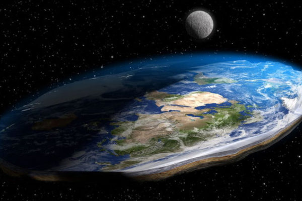

UNIONE ITALIANA TERRAPIATTISTI |
||||
|---|---|---|---|---|
|
Il Nostro MottoLa terra è piatta, noi siamo terrapiattisti, ambasciatori fuori da ogni giurisdizione planetaria" Cit. Calogero l'astropiattista Cosa vuol dire unirsi a noi?Fregiarsi dell’essere un terrapiattista significa molto più che essere convinti della forma bidimensionale della Terra. In Italia, oggi, aderire al movimento Flat Earth vuol dire abbracciare una serie di teorie alternative e RIVOLUZIONARIE su argomenti che spaziano dal Duomo di Milano all’Australia, da Babbo Natale all’evoluzione, fino ad arrivare a screditare Einstein e una miriade di altri, suddetti, "scienziati". La bufala degli Sbarchi lunari e delle missioni spazialiLa menzogna sull’esplorazione spaziale è chiaramente totale: gli allunaggi della Nasa sono chiaramente un falso, e tutte le altre presunte sonde lanciate nello Spazio solo una favoletta. "L’esplorazione spaziale" serve unicamente per sostenere la teoria della Terra sferica, e anche gli astronauti sono inevitabilmente attori ben pagati per simulare missioni in orbita e divulgare scemenze. Come spiegare dunque le Foto satellitari e mappamondi? Strumenti di propaganda! Le immagini "raccolte dallo Spazio" sono in realtà grafiche realizzate al computer create ad hoc per convincerci che davvero viviamo su un pianeta sferico. Come ulteriore elemento di persuasione nei negozi si trovano mappamondi che riproducono la falsa forma di cui ci vogliono convincere. Lo stesso varrebbe per i libri di scuola e gli atlanti: strumenti creati dal sistema per non farci conoscere la verità.  |